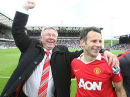
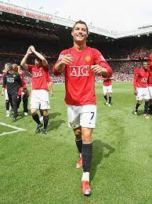
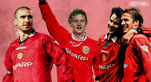
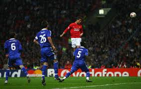
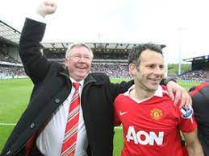
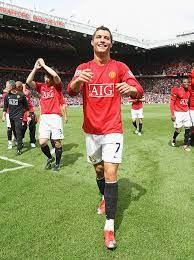
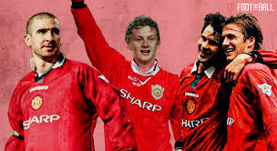
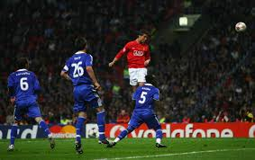

A TRIBUTE TO SIR ALEX FERGUSON & MANCHESTER UNITED

MANCHESTER UNITED - MORE THAN A FOOTBALL CLUB
SIR ALEX FERGUSON - MORE THAN A MANAGER
Manchester United Football Club is a professional football club which compete in and have dominated the top flight.
Based in Old Trafford, Greater Manchester, England, Manchester United was founded in 1978 as Newton Heath Football Club
in 1978.
 






